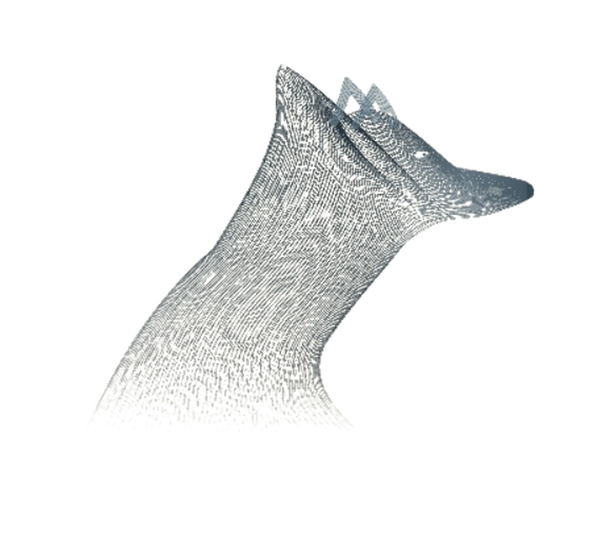

01
AI-augmented workflow
one engineer + an agent team
- Claude Code
- Hermes agent
- OpenCode
- Custom AI agents for organizations
- RAG — private data pipelines
- Codex CLI
- Agent-team orchestration
- Human-reviewed diffs

Fifteen public builds across APIs, AI, apps and industrial — filter by what you need.
Every card opens a working repository.


The whole stack, one engineer + an AI agent team — dark pills are what the market asks for most. Not boxed into one tool, one language or one layer.
Core: TypeScript - Python - Go - C# — also C, PHP, SQL
one engineer + an agent team
screens that feel designed
runtime first — frameworks second
More API tech: REST - GraphQL - gRPC - WebSockets - OpenAPI specs
modeled to last
from idea to blueprint
beyond the browser
ships and stays shipped
always mid-climb
Powered by an AI agent team — Hermes, Claude Code, OpenCode, Codex — with a human review on every diff. For organizations I also design & deploy private AI agents with RAG over your own data — on your infrastructure.
A repo, a spec, or one paragraph is enough — we scope it into a shippable first cut.
I direct an AI agent team — Hermes, Claude Code, OpenCode, Codex — orchestrating every task and reviewing every diff myself. Docs, tests and CI land with the code.
Deployed, monitored and documented — ready to hand over or keep evolving.